Marvels written into form
Most of us noticed the pattern long before we had a name for it. A pinecone holds its scales in the same spiral grammar. A fern repeats its leaflets along the stem as though a rule were copied into living tissue. A nautilus grows its chamber curve by curve. Bees build hexagons because no other tiling stores more honey with less wax. Snow crystals branch in six-fold symmetry. Galaxies wheel in logarithmic arms across distances our minds cannot hold. Inside the cell, DNA coils in a helix that stores and copies life. The iris of your eye reads light through radial symmetry built for focus.
None of this came from a classroom. It grew. And when the same ratios keep appearing from seed to galaxy, from wax cell to human eye, the reasonable question is not whether form matters. It is whose mind wrote the grammar into matter before we had language for it.
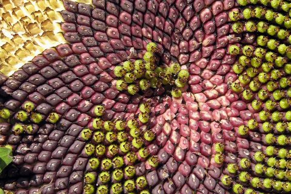
Sunflower
Count the spirals if you can. Every seed sits where the gap is widest. The ratio was there before Fibonacci had a name.
Pinecone
Scales climb in opposing spirals so the cone can breathe and bear weight. Curvature solved in wood, not on paper.
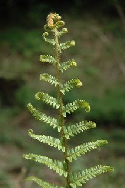
Fern frond
Leaflets repeat along the stem. A living plant carrying branching geometry, not a diagram someone traced.
Nautilus shell
Each new chamber follows the curve of the last. Ratio written in calcium and living tissue.
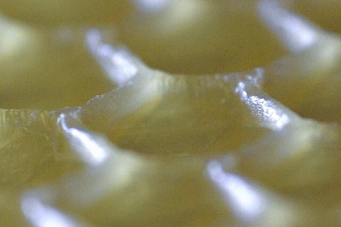
Honeycomb
Hexagons tile the plane with less wax than any other shape the bees could build. Efficiency encoded in wax.
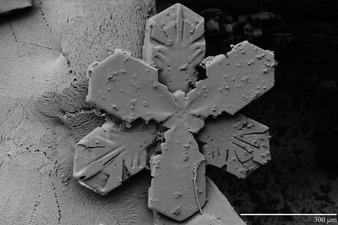
Snowflake
Water freezes into six arms because the crystal lattice demands it. Order held in ice.
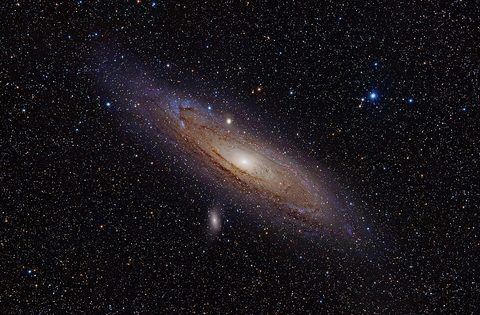
Galaxy spiral
Arms sweep across billions of miles in the same spiral grammar you saw in a seed head.
Double helix
Life stores its text in a helical archive. Form that copies itself.
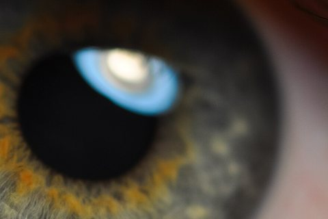
Human eye
The iris opens in radial symmetry so the body can read light and hold focus.
One vocabulary from seed to star
Fibonacci, the golden ratio, hexagonal tiling, branching symmetry, rotational order: these are not lucky accidents scattered through an indifferent universe. They read like the vocabulary of a Builder who thinks in measure.
We learn geometry in school and then act surprised when creation already uses it. A child who has never heard of Fibonacci still feels something when a sunflower and a galaxy photograph sit side by side. That feeling is not sentiment alone. It is recognition. The flower and the spiral arm belong to the same author. Scripture already said so when it praised the God who numbers the stars and formed the inward parts.
Does creation's intelligence stop at the garden gate?
Everywhere we look in what He made, form speaks. The flower, the shell, the snowflake, the cell: creation carries geometry that stops you mid-thought.
Are we really to believe God's own ark, tabernacle, temple, and city were plain box structures with no creativity and no handprint of His mind? Or did generations understand the measure wrong and pass down flat diagrams in place of the pattern?
We began promoting the recovery work below because that question would not leave us alone. Structure by structure, the text, the models, and the numbers are weighed against the intelligence we see in what God already made.
The pattern did not shrink when it moved from garden to Exodus
What you have seen above is not an argument from beauty alone. It is the lens. When Exodus describes curtains whose dimensions encode π, when Genesis describes a vessel built for water from every direction, when Ezekiel and Revelation describe a city measured around its circumference, we are reading building instructions from the same God who packed Fibonacci into a seed head. The studies below follow that thread. Some come from researchers we promote. One is our own work on Tabernacle form and the genome. Each page shows its evidence and lets the measure speak.
We are not asking anyone to swap one religious picture for another without proof. We are saying the proof was always in the world God made, and Scripture's buildings were never meant to look less intelligent than a honeycomb. When the recovery work matches the geometry of creation, the shoebox versions stop being pious enough to believe. That is where this page was leading all along.
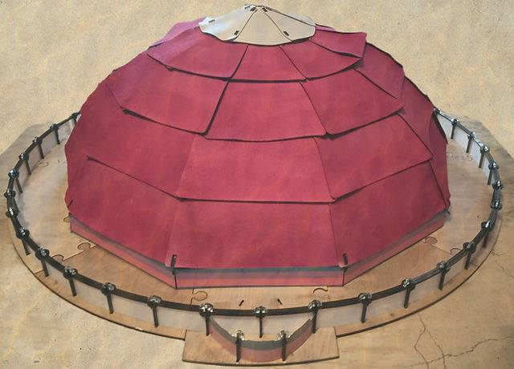
Promoted · Project314God of Pi
π in the Exodus curtains. Circular court and decagon dwelling recovered from the text.
Open study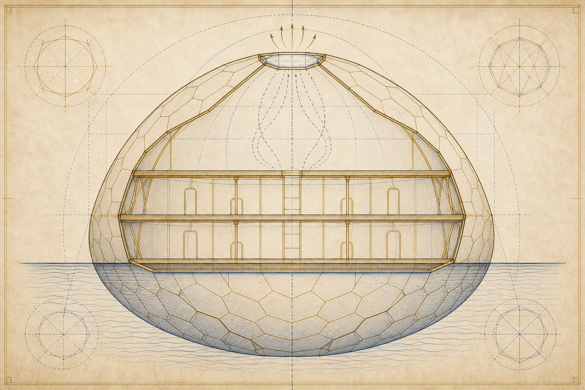
Promoted · Project ArcNoah's Ark
Survival vessel vs wooden shoebox. Curvature when the flood comes from every direction.
Open study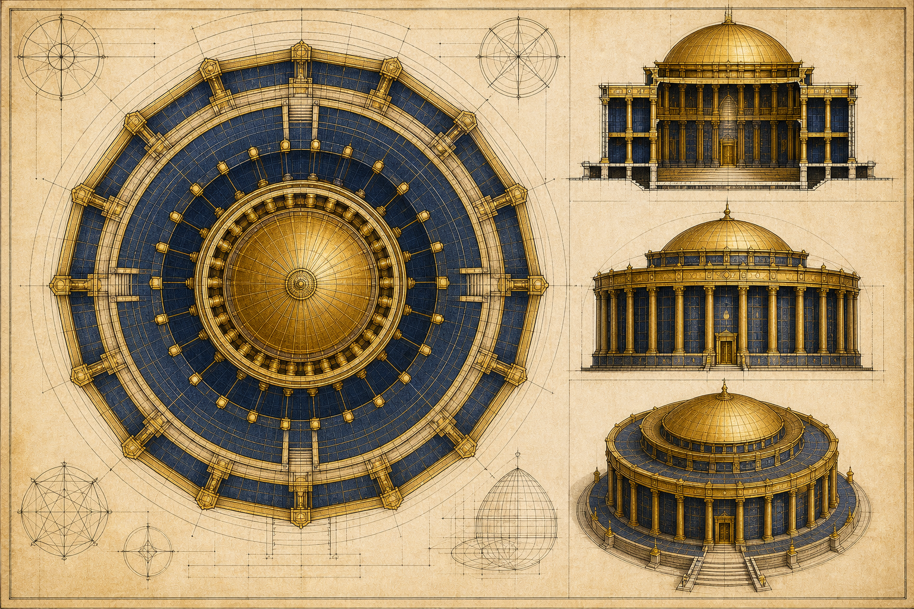
Promoted · Project ArcSolomon's Temple
Stone enlargement of Moses' blueprint, not a post-exile rectangular shoebox.
Open study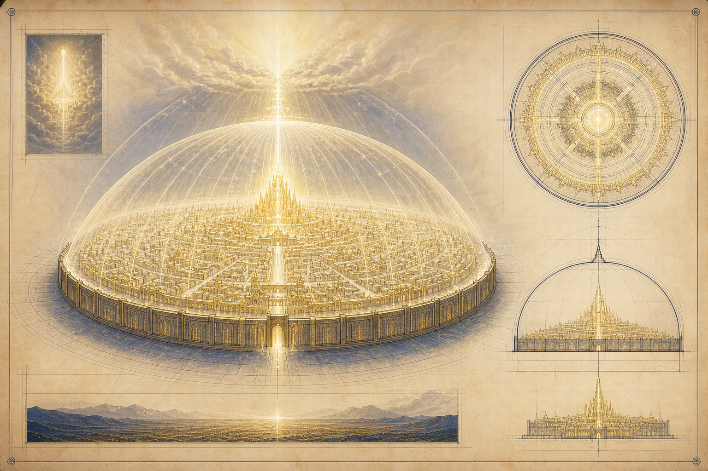
Promoted · Project ArcHeavenly Jerusalem
City-dwelling pattern from Ezekiel to Revelation. Circumference language, not a flat grid.
Open study Promoted · Rob SkibaBiblical Cosmology
Firmament, fixed earth, and the cosmology Scripture describes before modern models hardened.
Open study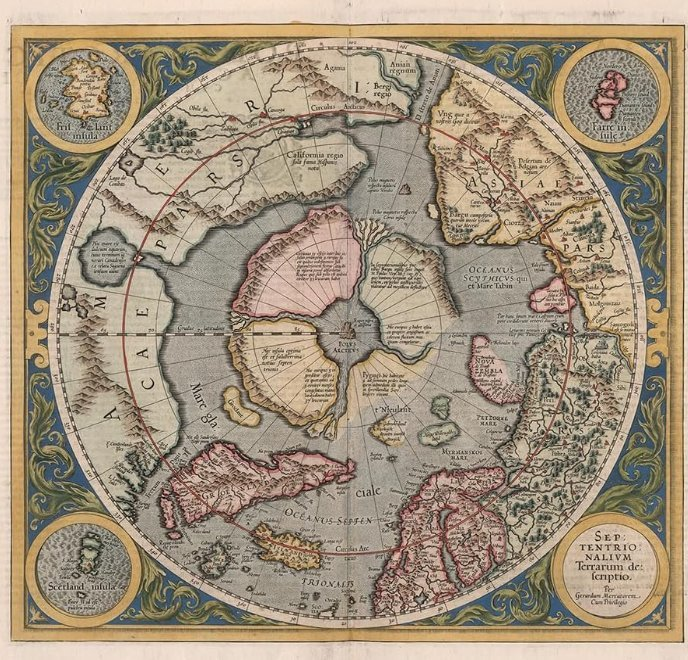
Historical mapsOld Maps
Cartography before the globe became the only picture of the world beneath our feet.
Open study Original · 2:22 Church
Original · 2:22 Church
Decagon DNA
Tabernacle π, ten-fold symmetry, and the genome. Our full article on pattern at tent and cell.
Read articleNature photographs from Wikimedia Commons and public-domain sources (NIH for DNA). Promoted studies link to Project314.org, Renformation.com, and testingtheglobe.com. The Decagon DNA article is our own work. Our Story carries the burden behind this recovery.